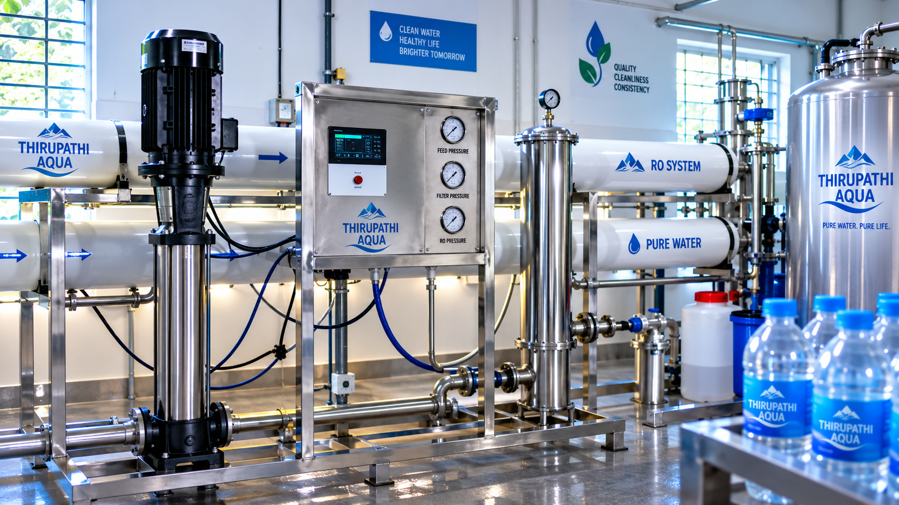
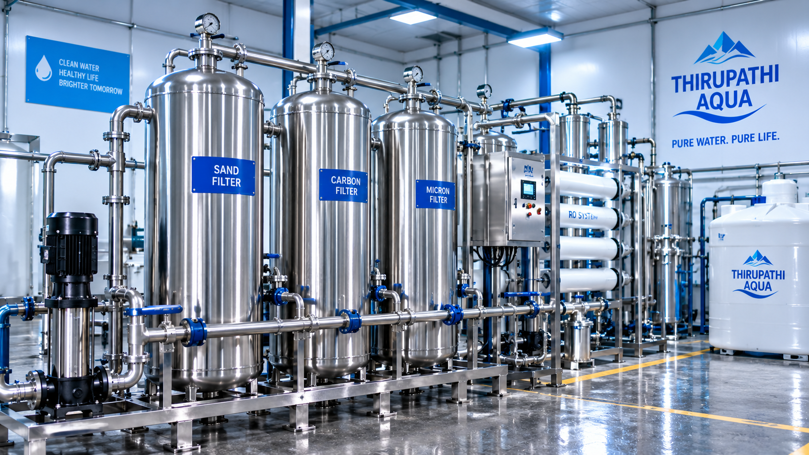
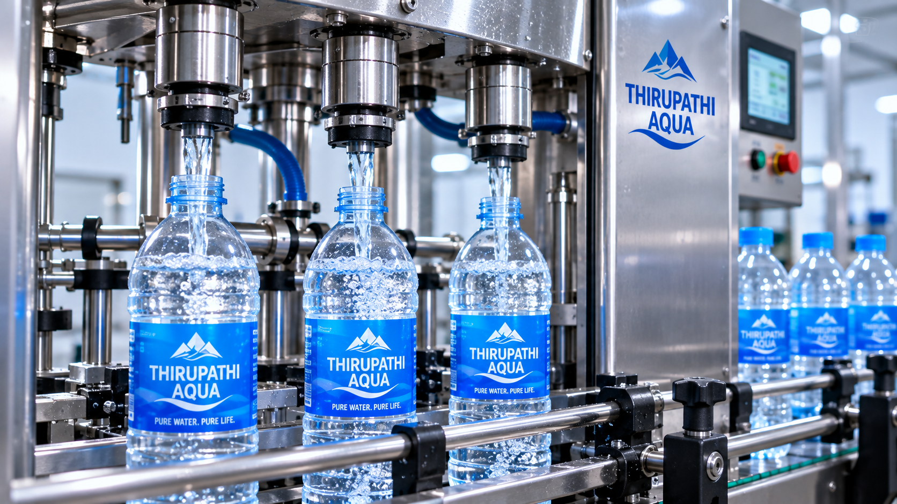
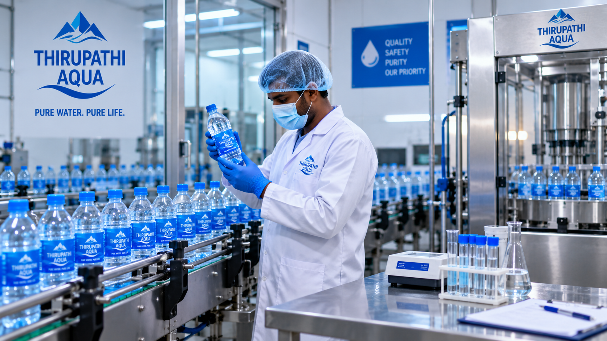
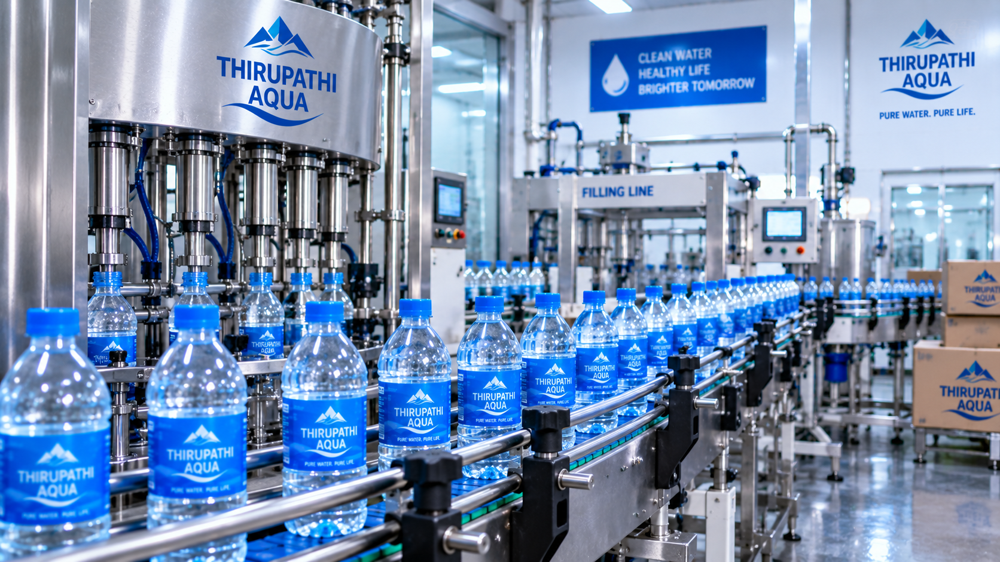
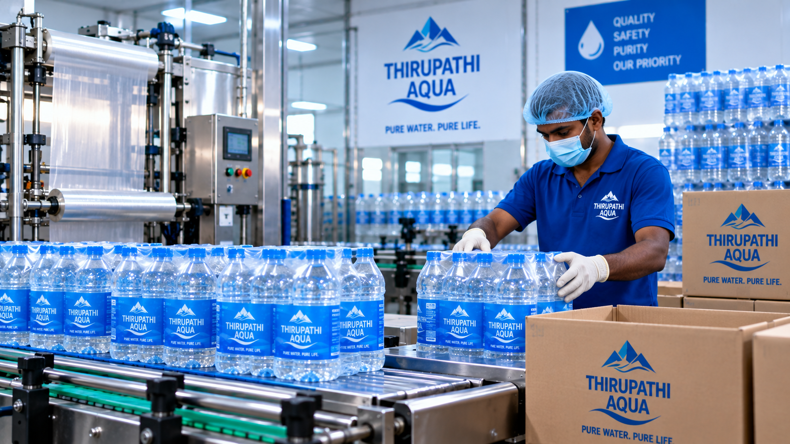

From Water to Refreshment.
Explore the carefully managed journey behind every THIRUPATHI AQUA bottle.
Purity Through Every Stage.
THIRUPATHI AQUA follows a carefully managed production journey from water treatment and purification to filling, capping and final packaging.
Each stage is handled with attention to cleanliness, consistency and organized production.

01Initial Water Treatment.
The journey begins with water entering the controlled treatment system where it is prepared for the purification stages that follow.
Carefully managed treatment creates the foundation for the next stage of processing.

02Filtration with Precision.
Water moves through filtration equipment designed to reduce unwanted particles and prepare it for further purification.
Modern equipment supports a consistent, controlled filtration process.

03Purification for Clarity.
The water continues through the purification process before it reaches the bottling stage.
The goal is clear, refreshing water prepared for everyday hydration.

04Production Monitoring.
Key stages of the production process are monitored as water moves toward filling and final packaging.
Organized handling helps maintain consistency throughout production.

05Controlled Bottle Filling.
Purified water is filled into clean bottles as they move through the production line.
Filling equipment helps maintain an organized and consistent bottling process.

06Sealed. Packed. Ready.
Bottles are capped, labelled and prepared for handling and distribution.
The journey concludes with finished THIRUPATHI AQUA bottles ready for refreshment.